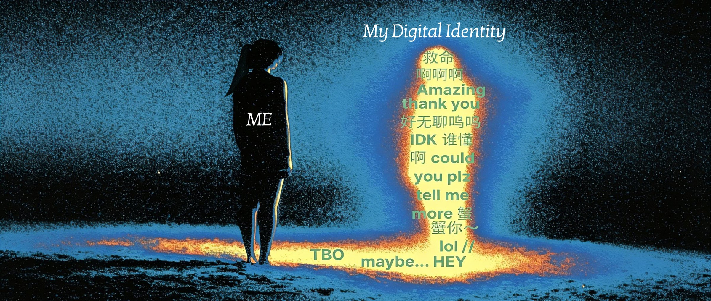

Website · Podcast · 2025/26
The question
If the platform shapes who you can be, how much of your digital identity is actually yours?

Two versions of her
Digital Mirror starts from a gap I noticed in myself.
I write long captions, post photos from real days and get comments from people who share my references.
My grid is empty.
Same person, two completely different versions of her.
The site follows that gap outward: it begins with one day in my own digital life and ends with a pop star who has 293 million followers, asking the same question at both scales.
Every platform has an internal grammar — a set of design rules that determines what kinds of expression are even possible within it.
Framing drawn from Gee (2005), as used on the site
Four logs from my own digital life
A day traced through WeChat, Instagram and Xiaohongshu, each with a different language, self and kind of closeness.
Read the log →Four people, one WeChat secondhand group, and the rules two of us followed without knowing it.
Read the log →Fifty-two TikTok posts across five years, then silence: what it means to visit a platform instead of living in it.
Read the log →A sleepless Wednesday in Leeds that a stranger in Jiangsu read as a day “so full”.
Read the log →Theory in use
Same Person, Two PlatformsA 17-minute group episode comparing Justin Bieber’s Instagram and TikTok through media theory, semiotics and interculturalism.
Episode page →